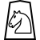

รูปแบบโยไคของโชงิ
โองิ (王棋, โรมาจิ: โองิ), หรือที่รู้จักในชื่อ หมากรุกโกมาโย, เป็นรูปแบบโรแมนติกของโชงิญี่ปุ่นแบบดั้งเดิมที่เล่นบนกระดาน 8x8 รูปแบบนี้ได้นำเสนอชิ้นส่วน เจ้าหญิง ซึ่งผสมผสานการเคลื่อนไหวของอัศวินและพระสังฆราชจากหมากรุก, ส่งเสริมสไตล์การเล่นที่กล้าหาญและมีพลวัตมากขึ้น โดยเกมมักจะสั้นลง คำว่า โองิ หมายถึง
เกมหมากรุกของกษัตริย์ (王, โรมาจิ: โอ) (棋, โรมาจิ: กิ)แม้ว่าโองิจะรักษาหลักการหลักของโชงิไว้ แต่ก็ถูกห่อหุ้มด้วยเทพนิยายสมัยใหม่มากกว่าที่มาทางประวัติศาสตร์ ทำให้แตกต่างจากเกมที่มีต้นกำเนิดที่เอกสารอ้างอิงได้อย่างชัดเจนเช่น Chaturanga ใจกลางของเรื่องราววัฒนธรรมของมันคือตำนานเมืองที่เชื่อมโยงเกมนี้กับโยไคตำนานที่ชื่อว่าโกมาโย ให้ความมีเสน่ห์ทางเวทมนตร์แก่โองิและวางมันไว้ในเทปสตรีที่ร่ำรวยของญี่ปุ่น ไม่ว่าเรื่องราวนี้จะมีรากฐานมาจากความจริงหรือความเพ้อฝันก็ตาม มันเพิ่มความลึกให้กับบริบทของเกม ดึงดูดผู้เล่นเข้าสู่โลกที่การเล่นเกมกลยุทธ์ปะทะกับการเล่าเรื่องทางตำนาน
ติดตั้ง
|  |  |
||||||
 |
 |
||||||
 |
|
|
|
|
|
|
|
 |
 |
 |
 |
|
|
|
ชิ้นส่วน
ผู้เล่นด้านเหนือ
| ชื่อ | ชื่อภาษาอังกฤษ | ชื่อภาษาญี่ปุ่น | ตัวย่อ | ตัวอักษรฮั่น |
|---|---|---|---|---|
| โคน | Bishop | 角行 | b |
角 |
| ขุน | King | 玉将 | k |
玉 |
| ม้า | Knight | 桂馬 | n |
桂 |
| หอก | Lance | 香車 | l |
香 |
| เบี้ย | Pawn | 歩兵 | p |
歩 |
| เจ้าหญิง | Princess | 玉妃 | i |
妃 |
| โคนเลื่อนขั้น | Promoted Bishop | 龍馬 | +b |
馬 |
| ม้าเลื่อนขั้น | Promoted Knight | 成桂 | +n |
圭 |
| หอกเลื่อนขั้น | Promoted Lance | 成香 | +l |
杏 |
| เบี้ยเลื่อนขั้น | Promoted Pawn | と金 | +p |
と |
| เจ้าแม่ | Promoted Princess | 女神 | +i |
神 |
| เรือเลื่อนขั้น | Promoted Rook | 龍王 | +r |
龍 |
| เงินเลื่อนขั้น | Promoted Silver General | 成銀 | +s |
全 |
| เรือ | Rook | 飛車 | r |
飛 |
| เงิน | Silver General | 銀将 | s | 銀 |
ผู้เล่นด้านใต้
| ชื่อ | ชื่อภาษาอังกฤษ | ชื่อภาษาญี่ปุ่น | ตัวย่อ | ตัวอักษรฮั่น |
|---|---|---|---|---|
| โคน | Bishop | 角行 | B |
角 |
| ขุน | King | 王将 | K |
王 |
| ม้า | Knight | 桂馬 | N |
桂 |
| หอก | Lance | 香車 | L |
香 |
| เบี้ย | Pawn | 歩兵 | P |
歩 |
| เจ้าหญิง | Princess | 王妃 | I |
妃 |
| โคนเลื่อนขั้น | Promoted Bishop | 龍馬 | +B |
馬 |
| ม้าเลื่อนขั้น | Promoted Knight | 成桂 | +N |
圭 |
| หอกเลื่อนขั้น | Promoted Lance | 成香 | +L |
杏 |
| เบี้ยเลื่อนขั้น | Promoted Pawn | と金 | +P |
と |
| เจ้าแม่ | Promoted Princess | 女神 | +I |
神 |
| เรือเลื่อนขั้น | Promoted Rook | 龍王 | +R |
龍 |
| เงินเลื่อนขั้น | Promoted Silver General | 成銀 | +S |
全 |
| เรือ | Rook | 飛車 | R |
飛 |
| เงิน | Silver General | 銀将 | S | 銀 |
หมายเหตุ: ความแตกต่างหลักจากโชงิแบบดั้งเดิมคือการนำเสนอชิ้นส่วนเฉพาะที่รู้จักในชื่อ เจ้าหญิง ชิ้นส่วนนี้ ซึ่งไม่ปรากฏในโชงิคลาสสิก แทนที่จะเป็นองค์ประกอบกลยุทธ์สำคัญของเกม มันผสมผสานความสามารถในการเคลื่อนที่ของอัศวินหมากรุกและพระสังฆราช ทำให้สามารถกระโดดข้ามชิ้นส่วนอื่นๆ ในรูปแบบ L ได้ รวมถึงการเคลื่อนที่ได้ทุกทิศทางในช่องว่างที่ไม่มีชิ้นส่วนคั่น การรวมกันของการเคลื่อนที่นี้ให้ความหลากหลายที่ไม่มีใครเทียบได้กับเจ้าหญิงบนกระดาน 8x8 ทำให้เป็นชิ้นส่วนที่สำคัญและมีพลังในโองิ
กฎกติกา
ความแตกต่างหลักจากโชงิแบบดั้งเดิม:
- ขนาดกระดาน: โองิเล่นบนกระดาน 8x8 ไม่เหมือนกับกระดานมาตรฐาน 9x9 ที่ใช้ในโชงิ
- ชิ้นส่วนเจ้าหญิง: การเพิ่มชิ้นส่วนเจ้าหญิงเป็นเอกลักษณ์ในโองิ ซึ่งผสมผสานการเคลื่อนที่ของพระสังฆราชและอัศวินในหมากรุก ทำให้เป็นชิ้นส่วนที่ทรงพลังและหลากหลาย
- การเลื่อนขั้นบังคับ:
- ในโองิ การเลื่อนขั้นชิ้นส่วนเป็นสิ่งบังคับ กฎนี้ใช้กับชิ้นส่วนทั้งหมด รวมถึงเจ้าหญิง
- เมื่อเลื่อนขั้น ชิ้นส่วนเจ้าหญิงจะได้รับความสามารถในการเคลื่อนที่ของพระราชา เพิ่มเติมจากความสามารถที่มีอยู่
- การตัดสินด้วยโองิพอน: โองิอนุญาตให้ตัดสินด้วยการวางโองิพอน ฟีเจอร์เฉพาะที่ไม่มีในโชงิแบบดั้งเดิม
หมายเหตุ: กฎและกลไกการเล่นอื่นๆ ในโองิถูกสืบทอดมาจากโชงิแบบดั้งเดิม นี่รวมถึงการเคลื่อนที่ของชิ้นส่วนโดยทั่วไป วิธีการจับ และวัตถุประสงค์พื้นฐานของเกม ด้วยการรักษาแง่มุมพื้นฐานของโชงิและการผสมผสานองค์ประกอบเฉพาะ โองินำเสนอประสบการณ์กลยุทธ์ที่ทั้งคุ้นเคยและสดชื่นสำหรับผู้เล่น